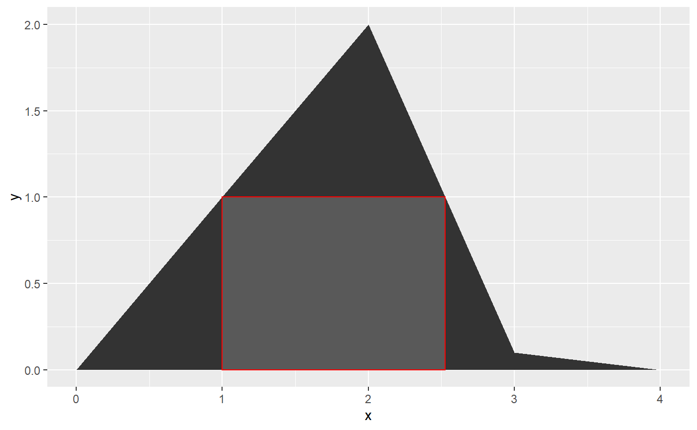

hutils package
My name is Hugh. I’ve written some miscellaneous functions that don’t seem to belong in a particular package. I’ve usually put these in R/utils.R when I write a package. Thus, hutils.
This vignette just goes through each exported function.
library(knitr)
suggested_packages <- c("geosphere", "nycflights13", "dplyr", "ggplot2", "microbenchmark")
opts_chunk$set(eval = all(vapply(suggested_packages, requireNamespace, quietly = TRUE, FUN.VALUE = FALSE)))tryCatch({
library(geosphere)
library(nycflights13)
library(dplyr, warn.conflicts = FALSE)
library(ggplot2)
library(microbenchmark)
library(data.table, warn.conflicts = FALSE)
library(magrittr)
library(hutils, warn.conflicts = FALSE)
},
# requireNamespace does not detect errors like
# package ‘dplyr’ was installed by an R version with different internals; it needs to be reinstalled for use with this R version
error = function(e) {
opts_chunk$set(eval = FALSE)
})
options(digits = 4)Aliases
These are simple additions to magrittr‘s aliases, including: capitalized forms of and and or that invoke && and || (the ’long-form’ logical operators) and nor / neither functions.
The main motivation is to make the source code easier to indent. I occasionally find such source code easier to use.
## [1] TRUEnor (or neither which is identical) returns TRUE if and only if both arguments are FALSE.
coalesce and if_else
These are near drop-in replacements for the equivalent functions from dplyr. They are included here because they are very useful outside of the tidyverse, but may be required in circumstances where importing dplyr (with all of its dependencies) would be inappropriate.
They attempt to be drop-in replacements but:
-
hutils::if_elseonly works withlogical,integer,double, andcharactertype vectors. Lists and factors won’t work. -
hutils::coalesceshort-circuits on its first argument; if there are noNAs inxthenxis returned, even if the other vectors are the wrong length or type.
In addition, hutils::if_else is generally faster than dplyr::if_else:
my_check <- function(values) {
all(vapply(values[-1], function(x) identical(values[[1]], x), logical(1)))
}
set.seed(2)
cnd <- sample(c(TRUE, FALSE, NA), size = 100e3, replace = TRUE)
yes <- sample(letters, size = 100e3, replace = TRUE)
no <- sample(letters, size = 100e3, replace = TRUE)
na <- sample(letters, size = 100e3, replace = TRUE)
microbenchmark(dplyr = dplyr::if_else(cnd, yes, no, na),
hutils = hutils::if_else(cnd, yes, no, na),
check = my_check) %>%
print## Unit: milliseconds
## expr min lq mean median uq max neval cld
## dplyr 5.230 5.983 8.821 7.439 10.402 25.34 100 b
## hutils 1.871 1.993 3.038 2.562 2.663 11.52 100 acnd <- sample(c(TRUE, FALSE, NA), size = 100e3, replace = TRUE)
yes <- sample(letters, size = 1, replace = TRUE)
no <- sample(letters, size = 100e3, replace = TRUE)
na <- sample(letters, size = 1, replace = TRUE)
microbenchmark(dplyr = dplyr::if_else(cnd, yes, no, na),
hutils = hutils::if_else(cnd, yes, no, na),
check = my_check) %>%
print## Unit: milliseconds
## expr min lq mean median uq max neval cld
## dplyr 4.563 5.891 8.681 6.204 11.971 16.88 100 b
## hutils 1.177 1.475 3.700 1.529 1.587 134.43 100 aThis speed advantage also appears to be true of coalesce:
x <- sample(c(letters, NA), size = 100e3, replace = TRUE)
A <- sample(c(letters, NA), size = 100e3, replace = TRUE)
B <- sample(c(letters, NA), size = 100e3, replace = TRUE)
C <- sample(c(letters, NA), size = 100e3, replace = TRUE)
microbenchmark(dplyr = dplyr::coalesce(x, A, B, C),
hutils = hutils::coalesce(x, A, B, C),
check = my_check) %>%
print## Unit: milliseconds
## expr min lq mean median uq max neval cld
## dplyr 2.381 2.966 5.035 3.011 8.738 13.42 100 b
## hutils 1.034 1.379 2.552 1.417 1.483 12.41 100 aespecially during short-circuits:
x <- sample(c(letters), size = 100e3, replace = TRUE)
microbenchmark(dplyr = dplyr::coalesce(x, A, B, C),
hutils = hutils::coalesce(x, A, B, C),
check = my_check) %>%
print## Unit: microseconds
## expr min lq mean median uq max neval cld
## dplyr 2251.3 2797.9 5743.19 2890.50 9274.85 38926.7 100 b
## hutils 58.7 61.6 77.17 70.85 84.15 183.6 100 ax <- sample(c(letters, NA), size = 100e3, replace = TRUE)
A <- sample(c(letters), size = 100e3, replace = TRUE)
microbenchmark(dplyr = dplyr::coalesce(x, A, B, C),
hutils = hutils::coalesce(x, A, B, C),
check = my_check) %>%
print## Unit: microseconds
## expr min lq mean median uq max neval cld
## dplyr 2407.7 2933.8 4957 2976.6 3423.5 14218 100 a
## hutils 555.4 807.8 2871 824.2 882.7 134429 100 aDrop columns
To drop a column from a data.table, you set it to NULL
There’s nothing wrong with this, but I’ve found the following a useful alias, especially in a magrittr pipe.
## C
## 1: 1
## 2: 2
## 3: 3
## 4: 4
## 5: 5## C
## 1: 1
## 2: 2
## 3: 3
## 4: 4
## 5: 5These functions simple invoke the canonical form, so won’t be any faster.
Additionally, one can drop columns by a regular expression using drop_colr:
flights <- as.data.table(flights)
flights %>%
drop_colr("time") %>%
drop_colr("arr(?!_delay)", perl = TRUE)## year month day dep_delay arr_delay flight tailnum origin dest
## 1: 2013 1 1 2 11 1545 N14228 EWR IAH
## 2: 2013 1 1 4 20 1714 N24211 LGA IAH
## 3: 2013 1 1 2 33 1141 N619AA JFK MIA
## 4: 2013 1 1 -1 -18 725 N804JB JFK BQN
## 5: 2013 1 1 -6 -25 461 N668DN LGA ATL
## ---
## 336772: 2013 9 30 NA NA 3393 <NA> JFK DCA
## 336773: 2013 9 30 NA NA 3525 <NA> LGA SYR
## 336774: 2013 9 30 NA NA 3461 N535MQ LGA BNA
## 336775: 2013 9 30 NA NA 3572 N511MQ LGA CLE
## 336776: 2013 9 30 NA NA 3531 N839MQ LGA RDU
## distance hour minute
## 1: 1400 5 15
## 2: 1416 5 29
## 3: 1089 5 40
## 4: 1576 5 45
## 5: 762 6 0
## ---
## 336772: 213 14 55
## 336773: 198 22 0
## 336774: 764 12 10
## 336775: 419 11 59
## 336776: 431 8 40
drop_constant_cols
When a table is filtered, the filtrate is often redundant.
## month day dep_time sched_dep_time dep_delay arr_time
## 1: 1 1 542 540 2 923
## 2: 1 1 544 545 -1 1004
## 3: 1 1 557 600 -3 838
## 4: 1 1 558 600 -2 849
## 5: 1 1 558 600 -2 853
## ---
## 111275: 9 30 2240 2250 -10 2347
## 111276: 9 30 2241 2246 -5 2345
## 111277: 9 30 2307 2255 12 2359
## 111278: 9 30 2349 2359 -10 325
## 111279: 9 30 NA 1455 NA NA
## sched_arr_time arr_delay carrier flight tailnum dest air_time
## 1: 850 33 AA 1141 N619AA MIA 160
## 2: 1022 -18 B6 725 N804JB BQN 183
## 3: 846 -8 B6 79 N593JB MCO 140
## 4: 851 -2 B6 49 N793JB PBI 149
## 5: 856 -3 B6 71 N657JB TPA 158
## ---
## 111275: 7 -20 B6 2002 N281JB BUF 52
## 111276: 1 -16 B6 486 N346JB ROC 47
## 111277: 2358 1 B6 718 N565JB BOS 33
## 111278: 350 -25 B6 745 N516JB PSE 196
## 111279: 1634 NA 9E 3393 <NA> DCA NA
## distance hour minute time_hour
## 1: 1089 5 40 2013-01-01 05:00:00
## 2: 1576 5 45 2013-01-01 05:00:00
## 3: 944 6 0 2013-01-01 06:00:00
## 4: 1028 6 0 2013-01-01 06:00:00
## 5: 1005 6 0 2013-01-01 06:00:00
## ---
## 111275: 301 22 50 2013-09-30 22:00:00
## 111276: 264 22 46 2013-09-30 22:00:00
## 111277: 187 22 55 2013-09-30 22:00:00
## 111278: 1617 23 59 2013-09-30 23:00:00
## 111279: 213 14 55 2013-09-30 14:00:00
drop_empty_cols
This function drops columns in which all the values are NA.
## tailnum year type manufacturer
## 1: N10156 2004 Fixed wing multi engine EMBRAER
## 2: N102UW 1998 Fixed wing multi engine AIRBUS INDUSTRIE
## 3: N103US 1999 Fixed wing multi engine AIRBUS INDUSTRIE
## 4: N104UW 1999 Fixed wing multi engine AIRBUS INDUSTRIE
## 5: N10575 2002 Fixed wing multi engine EMBRAER
## ---
## 3295: N997AT 2002 Fixed wing multi engine BOEING
## 3296: N997DL 1992 Fixed wing multi engine MCDONNELL DOUGLAS AIRCRAFT CO
## 3297: N998AT 2002 Fixed wing multi engine BOEING
## 3298: N998DL 1992 Fixed wing multi engine MCDONNELL DOUGLAS CORPORATION
## 3299: N999DN 1992 Fixed wing multi engine MCDONNELL DOUGLAS CORPORATION
## model engines seats speed engine
## 1: EMB-145XR 2 55 NA Turbo-fan
## 2: A320-214 2 182 NA Turbo-fan
## 3: A320-214 2 182 NA Turbo-fan
## 4: A320-214 2 182 NA Turbo-fan
## 5: EMB-145LR 2 55 NA Turbo-fan
## ---
## 3295: 717-200 2 100 NA Turbo-fan
## 3296: MD-88 2 142 NA Turbo-fan
## 3297: 717-200 2 100 NA Turbo-fan
## 3298: MD-88 2 142 NA Turbo-jet
## 3299: MD-88 2 142 NA Turbo-jet## tailnum year type manufacturer
## 1: N10156 2004 Fixed wing multi engine EMBRAER
## 2: N102UW 1998 Fixed wing multi engine AIRBUS INDUSTRIE
## 3: N103US 1999 Fixed wing multi engine AIRBUS INDUSTRIE
## 4: N104UW 1999 Fixed wing multi engine AIRBUS INDUSTRIE
## 5: N10575 2002 Fixed wing multi engine EMBRAER
## ---
## 3295: N997AT 2002 Fixed wing multi engine BOEING
## 3296: N997DL 1992 Fixed wing multi engine MCDONNELL DOUGLAS AIRCRAFT CO
## 3297: N998AT 2002 Fixed wing multi engine BOEING
## 3298: N998DL 1992 Fixed wing multi engine MCDONNELL DOUGLAS CORPORATION
## 3299: N999DN 1992 Fixed wing multi engine MCDONNELL DOUGLAS CORPORATION
## model engines seats engine
## 1: EMB-145XR 2 55 Turbo-fan
## 2: A320-214 2 182 Turbo-fan
## 3: A320-214 2 182 Turbo-fan
## 4: A320-214 2 182 Turbo-fan
## 5: EMB-145LR 2 55 Turbo-fan
## ---
## 3295: 717-200 2 100 Turbo-fan
## 3296: MD-88 2 142 Turbo-fan
## 3297: 717-200 2 100 Turbo-fan
## 3298: MD-88 2 142 Turbo-jet
## 3299: MD-88 2 142 Turbo-jet
duplicated_rows
There are many useful functions for detecting duplicates in R. However, in interactive use, I often want to not merely see which values are duplicated, but also compare them to the original. This is especially true when I am comparing duplicates across a subset of columns in a a data.table.
flights %>%
# only the 'second' of the duplicates is returned
.[duplicated(., by = c("origin", "dest"))] ## year month day dep_time sched_dep_time dep_delay arr_time
## 1: 2013 1 1 600 600 0 837
## 2: 2013 1 1 607 607 0 858
## 3: 2013 1 1 608 600 8 807
## 4: 2013 1 1 623 627 -4 933
## 5: 2013 1 1 624 630 -6 840
## ---
## 336548: 2013 9 30 NA 1455 NA NA
## 336549: 2013 9 30 NA 2200 NA NA
## 336550: 2013 9 30 NA 1210 NA NA
## 336551: 2013 9 30 NA 1159 NA NA
## 336552: 2013 9 30 NA 840 NA NA
## sched_arr_time arr_delay carrier flight tailnum origin dest
## 1: 825 12 MQ 4650 N542MQ LGA ATL
## 2: 915 -17 UA 1077 N53442 EWR MIA
## 3: 735 32 MQ 3768 N9EAMQ EWR ORD
## 4: 932 1 UA 496 N459UA LGA IAH
## 5: 830 10 MQ 4599 N518MQ LGA MSP
## ---
## 336548: 1634 NA 9E 3393 <NA> JFK DCA
## 336549: 2312 NA 9E 3525 <NA> LGA SYR
## 336550: 1330 NA MQ 3461 N535MQ LGA BNA
## 336551: 1344 NA MQ 3572 N511MQ LGA CLE
## 336552: 1020 NA MQ 3531 N839MQ LGA RDU
## air_time distance hour minute time_hour
## 1: 134 762 6 0 2013-01-01 06:00:00
## 2: 157 1085 6 7 2013-01-01 06:00:00
## 3: 139 719 6 0 2013-01-01 06:00:00
## 4: 229 1416 6 27 2013-01-01 06:00:00
## 5: 166 1020 6 30 2013-01-01 06:00:00
## ---
## 336548: NA 213 14 55 2013-09-30 14:00:00
## 336549: NA 198 22 0 2013-09-30 22:00:00
## 336550: NA 764 12 10 2013-09-30 12:00:00
## 336551: NA 419 11 59 2013-09-30 11:00:00
## 336552: NA 431 8 40 2013-09-30 08:00:00flights %>%
# Both rows are returned and (by default)
# duplicates are presented adjacently
duplicated_rows(by = c("origin", "dest"))## year month day dep_time sched_dep_time dep_delay arr_time
## 1: 2013 1 1 1315 1317 -2 1413
## 2: 2013 1 1 1655 1621 34 1804
## 3: 2013 1 1 2056 2004 52 2156
## 4: 2013 1 2 1332 1327 5 1419
## 5: 2013 1 2 1746 1621 85 1835
## ---
## 336767: 2013 9 27 1516 1520 -4 1739
## 336768: 2013 9 29 1754 1755 -1 2019
## 336769: 2013 9 30 719 725 -6 916
## 336770: 2013 9 30 1519 1520 -1 1726
## 336771: 2013 9 30 1747 1755 -8 1941
## sched_arr_time arr_delay carrier flight tailnum origin dest
## 1: 1423 -10 EV 4112 N13538 EWR ALB
## 2: 1724 40 EV 3260 N19554 EWR ALB
## 3: 2112 44 EV 4170 N12540 EWR ALB
## 4: 1433 -14 EV 4316 N14153 EWR ALB
## 5: 1724 71 EV 3260 N14153 EWR ALB
## ---
## 336767: 1740 -1 MQ 3532 N724MQ LGA XNA
## 336768: 2015 4 MQ 3713 N725MQ LGA XNA
## 336769: 945 -29 MQ 3547 N735MQ LGA XNA
## 336770: 1740 -14 MQ 3532 N725MQ LGA XNA
## 336771: 2015 -34 MQ 3713 N720MQ LGA XNA
## air_time distance hour minute time_hour
## 1: 33 143 13 17 2013-01-01 13:00:00
## 2: 36 143 16 21 2013-01-01 16:00:00
## 3: 31 143 20 4 2013-01-01 20:00:00
## 4: 33 143 13 27 2013-01-02 13:00:00
## 5: 31 143 16 21 2013-01-02 16:00:00
## ---
## 336767: 160 1147 15 20 2013-09-27 15:00:00
## 336768: 160 1147 17 55 2013-09-29 17:00:00
## 336769: 150 1147 7 25 2013-09-30 07:00:00
## 336770: 148 1147 15 20 2013-09-30 15:00:00
## 336771: 146 1147 17 55 2013-09-30 17:00:00Haversine distance
To emphasize the miscellany of this package, I now present haversine_distance which simply returns the distance between two points on the Earth, given their latitude and longitude.
I prefer this to other packages’ implementations. Although the geosphere package can do a lot more than calculate distances between points, I find the interface for distHaversine unfortunate as it cannot be easily used inside a data.frame. In addition, I’ve found the arguments clearer in hutils::haversine_distance rather than trying to remember whether to use byrow inside the matrix function while passing to distHaversine.
DT1 <- data.table(lat_orig = runif(1e5, -80, 80),
lon_orig = runif(1e5, -179, 179),
lat_dest = runif(1e5, -80, 80),
lon_dest = runif(1e5, -179, 179))
DT2 <- copy(DT1)
microbenchmark(DT1[, distance := haversine_distance(lat_orig, lon_orig,
lat_dest, lon_dest)],
DT2[, distance := distHaversine(cbind(lon_orig, lat_orig),
cbind(lon_orig, lat_orig))])## Unit: milliseconds
## expr
## DT1[, `:=`(distance, haversine_distance(lat_orig, lon_orig, lat_dest, lon_dest))]
## DT2[, `:=`(distance, distHaversine(cbind(lon_orig, lat_orig), cbind(lon_orig, lat_orig)))]
## min lq mean median uq max neval cld
## 21.16 21.58 24.69 21.74 22.21 50.4 100 a
## 39.25 40.12 55.55 54.23 63.26 209.8 100 b
mutate_other
There may be occasions where a categorical variable in a data.table may need to modified to reduce the number of distinct categories. For example, you may want to plot a chart with a set number of facets, or ensure the smooth operation of randomForest, which accepts no more than 32 levels in a feature.
mutate_other keeps the n most common categories and changes the other categories to Other.
set.seed(1)
DT <- data.table(Fruit = sample(c("apple", "pear", "orange", "tomato", "eggplant"),
size = 20,
prob = c(0.45, 0.25, 0.15, 0.1, 0.05),
replace = TRUE),
Price = rpois(20, 10))
kable(mutate_other(DT, "Fruit", n = 3)[])| Fruit | Price |
|---|---|
| apple | 14 |
| apple | 11 |
| pear | 8 |
| Other | 2 |
| apple | 8 |
| Other | 10 |
| Other | 7 |
| pear | 12 |
| pear | 11 |
| apple | 12 |
| apple | 12 |
| apple | 10 |
| pear | 3 |
| apple | 11 |
| Other | 13 |
| pear | 7 |
| Other | 8 |
| Other | 11 |
| apple | 14 |
| Other | 9 |
ngrep
This is a ‘dumb’ negation of grep. In recent versions of R, the option invert = FALSE exists. A slight advantage of ngrep is that it’s shorter to type. But if you don’t have arthritis, best use invert = FALSE or !grepl.
notin ein enotin pin
These functions provide complementary functionality to %in%:
%notin%
%notin% is the negation of %in%, but also uses the package fastmatch to increase the speed of the operation
%ein% and %enotin%
The functions %ein% and %enotin% are motivated by a different sort of problem. Consider the following statement:
iris <- as.data.table(iris)
iris[Species %in% c("setosa", "versicolour")] %$%
mean(Sepal.Length / Sepal.Width)## [1] 1.47On the face of it, this appears to give the average ratio of Iris setosa and Iris versicolour irises. However, it only gives the average ratio of setosa irises, as the correct spelling is Iris versicolor not -our. This particular error is easy to make, (in fact when I wrote this vignette, the first hit of Google for iris dataset made the same spelling error), but it’s easy to imagine similar mistakes, such as mistaking the capitalization of a value. The functions %ein% and %enotin% strive to reduce the occurrence of this mistake. The functions operate exactly the same as %in% and %enotin% but error if any of the table of values to be matched against is not present in any of the values:
iris <- as.data.table(iris)
iris[Species %ein% c("setosa", "versicolour")] %$%
mean(Sepal.Length / Sepal.Width)## Error: `rhs` contained versicolour, but this value was not found in `lhs = Species`. All values of `rhs` must be in `lhs`. Ensure you have specified `rhs` correctly.The e stands for ‘exists’; i.e. they should be read as “exists and in” and “exists and not in”.
%pin%
This performs a partial match (i.e grepl) but with a possibly more readable or intuitive syntax
## [1] TRUEIf the RHS has more than one element, the matching is done on alternation (i.e. OR):
## Sepal.Length Sepal.Width Petal.Length Petal.Width Species
## 1: 7.0 3.2 4.7 1.4 versicolor
## 2: 6.4 3.2 4.5 1.5 versicolor
## 3: 6.9 3.1 4.9 1.5 versicolor
## 4: 5.5 2.3 4.0 1.3 versicolor
## 5: 6.5 2.8 4.6 1.5 versicolor
## 6: 5.7 2.8 4.5 1.3 versicolorThere is an important qualification: if the RHS is NULL, then the result will be TRUE along the length of x, contrary to the behaviour of %in%. This is not entirely unexpected as NULL could legitimately be interpreted as \(\varepsilon\), the empty regular expression, which occurs in every string.
provide.dir
This is the same as dir.create but checks whether the target exists or not and does nothing if it does. Motivated by \providecommand in \(\rm\LaTeX{}\), which creates a macro only if it does not exist already.
select_which
This provides a similar role to dplyr::select_if but was originally part of package:grattan so has a different name. It simply returns the columns whose values return TRUE when Which is applied. Additional columns (which may or not may satisfy Which) may be included by using .and.dots. (To remove columns, you can use drop_col).
DT <- data.table(x = 1:5,
y = letters[1:5],
AB = c(NA, TRUE, FALSE, TRUE, FALSE))
select_which(DT, anyNA, .and.dots = "y")## AB y
## 1: NA a
## 2: TRUE b
## 3: FALSE c
## 4: TRUE d
## 5: FALSE e
set_cols_first
Up to and including data.table 1.10.4, one could only reorder the columns by supplying all the columns. You can use set_cols_first and set_cols_last to put columns first or last without supplying all the columns.
Unique keys
In some circumstances, you need to know that the key of a data.table is unique. For example, you may expect a join to be performed later, without specifying mult='first' or permitting Cartesian joins. data.table does not require a key to be unique and does not supply tools to check the uniqueness of keys. hutils supplies two simple functions: has_unique_key which when applied to a data.table returns TRUE if and only if the table has a key and it is unique.
set_unique_key does the same as setkey but will error if the resultant key is not unique.
hutils v1.1.0
auc
The area under the (ROC) curve gives a single value to measure the tradeoff between true positives and false positives.
dt <- data.table(y = !sample(0:1, size = 100, replace = TRUE),
x = runif(100))
dt[, pred := predict(lm(y ~ x, data = .SD), newdata = .SD)]
dt[, auc(y, pred)]## [1] 0.533
select_grep
To select columns matching a regular expression:
## arr_time sched_arr_time arr_delay carrier
## 1: 830 819 11 UA
## 2: 850 830 20 UA
## 3: 923 850 33 AA
## 4: 1004 1022 -18 B6
## 5: 812 837 -25 DL
## ---
## 336772: NA 1634 NA 9E
## 336773: NA 2312 NA 9E
## 336774: NA 1330 NA MQ
## 336775: NA 1344 NA MQ
## 336776: NA 1020 NA MQYou can use the additional arguments .and and .but.not to override the patterns.
## year sched_arr_time arr_delay carrier
## 1: 2013 819 11 UA
## 2: 2013 830 20 UA
## 3: 2013 850 33 AA
## 4: 2013 1022 -18 B6
## 5: 2013 837 -25 DL
## ---
## 336772: 2013 1634 NA 9E
## 336773: 2013 2312 NA 9E
## 336774: 2013 1330 NA MQ
## 336775: 2013 1344 NA MQ
## 336776: 2013 1020 NA MQ
hutils v1.2.0
RQ
This is simply a shorthand to test whether a package needs installing. The package name need not be quoted, for convenience.
## [1] "dplyr installed."
ahull
This locates the biggest rectangle beneath a curve:
ggplot(data.table(x = c(0, 1, 2, 3, 4), y = c(0, 1, 2, 0.1, 0))) +
geom_area(aes(x, y)) +
geom_rect(data = ahull(, c(0, 1, 2, 3, 4), c(0, 1, 2, 0.1, 0)),
aes(xmin = xmin,
xmax = xmax,
ymin = ymin,
ymax = ymax),
color = "red") 
set.seed(101)
ahull_dt <-
data.table(x = c(0:100) / 100,
y = cumsum(rnorm(101, 0.05)))
ggplot(ahull_dt) +
geom_area(aes(x, y)) +
geom_rect(data = ahull(ahull_dt),
aes(xmin = xmin,
xmax = xmax,
ymin = ymin,
ymax = ymax),
color = "red") +
geom_rect(data = ahull(ahull_dt,
incl_negative = TRUE),
aes(xmin = xmin,
xmax = xmax,
ymin = ymin,
ymax = ymax),
color = "blue") +
geom_rect(data = ahull(ahull_dt,
incl_negative = TRUE,
minH = 4),
aes(xmin = xmin,
xmax = xmax,
ymin = ymin,
ymax = ymax),
color = "green") +
geom_rect(data = ahull(ahull_dt,
incl_negative = TRUE,
minW = 0.25),
aes(xmin = xmin,
xmax = xmax,
ymin = ymin,
ymax = ymax),
color = "white",
fill = NA)
hutils v1.3.0
weighted_quantile
Simply a version of quantile supporting weighted values:
## [1] 3.25 7.75## [1] 4 9
mutate_ntile
To add a column of ntiles (say, for later summarizing):
flights %>%
as.data.table %>%
.[, .(year, month, day, origin, dest, distance)] %>%
mutate_ntile(distance, n = 5L)## year month day origin dest distance distanceQuintile
## 1: 2013 1 1 EWR IAH 1400 4
## 2: 2013 1 1 LGA IAH 1416 4
## 3: 2013 1 1 JFK MIA 1089 4
## 4: 2013 1 1 JFK BQN 1576 4
## 5: 2013 1 1 LGA ATL 762 3
## ---
## 336772: 2013 9 30 JFK DCA 213 1
## 336773: 2013 9 30 LGA SYR 198 1
## 336774: 2013 9 30 LGA BNA 764 3
## 336775: 2013 9 30 LGA CLE 419 1
## 336776: 2013 9 30 LGA RDU 431 2You can use non-standard evaluation (as above) or you can quote the col argument. Use character.only = TRUE to ensure column is only interpreted as character.
flights %>%
as.data.table %>%
.[, .(year, month, day, origin, dest, distance)] %>%
mutate_ntile(distance, n = 5L)## year month day origin dest distance distanceQuintile
## 1: 2013 1 1 EWR IAH 1400 4
## 2: 2013 1 1 LGA IAH 1416 4
## 3: 2013 1 1 JFK MIA 1089 4
## 4: 2013 1 1 JFK BQN 1576 4
## 5: 2013 1 1 LGA ATL 762 3
## ---
## 336772: 2013 9 30 JFK DCA 213 1
## 336773: 2013 9 30 LGA SYR 198 1
## 336774: 2013 9 30 LGA BNA 764 3
## 336775: 2013 9 30 LGA CLE 419 1
## 336776: 2013 9 30 LGA RDU 431 2flights %>%
as.data.table %>%
mutate_ntile("distance",
n = 5L,
character.only = TRUE) %>%
.[, dep_delay := coalesce(dep_delay, 0)] %>%
.[, .(avgDelay = mean(dep_delay)), keyby = "distanceQuintile"]## distanceQuintile avgDelay
## 1: 1 12.88
## 2: 2 12.97
## 3: 3 13.14
## 4: 4 11.49
## 5: 5 11.16
hutils 1.4.0
%<->%
Referred to as swap in the documentation. Used to swap values between object names
## [1] TRUE
average_bearing
Determine the average bearing of vectors. Slightly more difficult than simply the average modulo 360 since its the most acute sector is desired.
## [1] 315## [1] 135
dir2
This is a faster version of list.files for Windows only, utilizing the dir command on the command prompt.
replace_pattern_in
A cousin of find_pattern_in, but instead of collecting the results, it replaces the contents sought with the replacement provided.
samp
A safer version of sample. I use it because I found the following behaviour of sample surprising.
DT <- data.table(x = c(5, 2, 3),
y = c(5, 3, 4))
DT[, .(Base = sample(.BY[["x"]]:.BY[["y"]])), keyby = .(x, y)]## x y Base
## 1: 2 3 2
## 2: 2 3 3
## 3: 3 4 4
## 4: 3 4 3
## 5: 5 5 5
## 6: 5 5 1
## 7: 5 5 3
## 8: 5 5 4
## 9: 5 5 2## `length(x) = 1`, so returning `rep.int(x, 1)`.## x y Base
## 1: 2 3 3
## 2: 2 3 2
## 3: 3 4 3
## 4: 3 4 4
## 5: 5 5 5